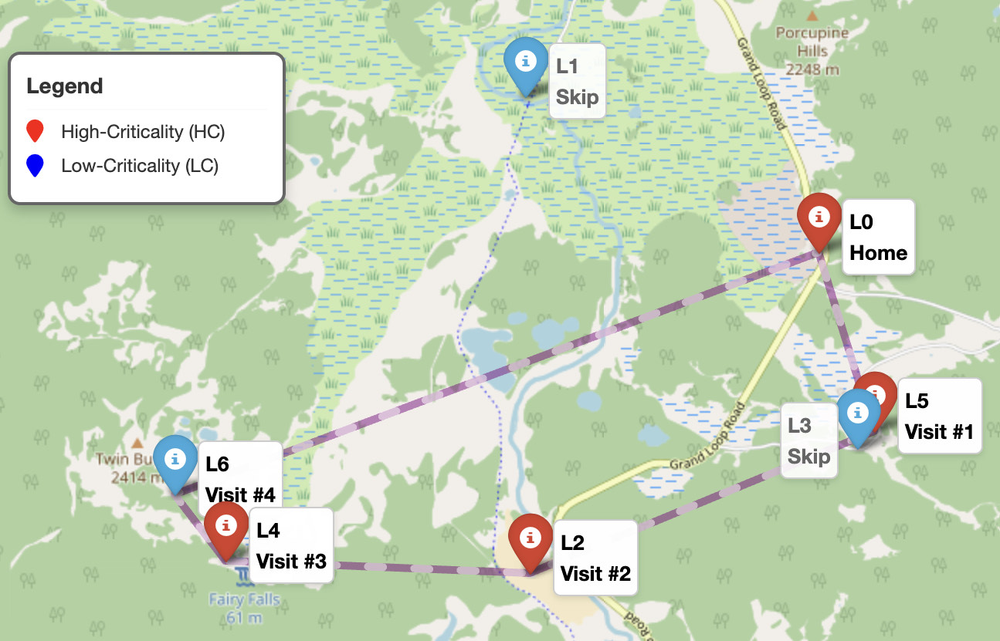
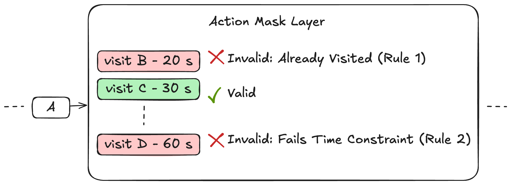
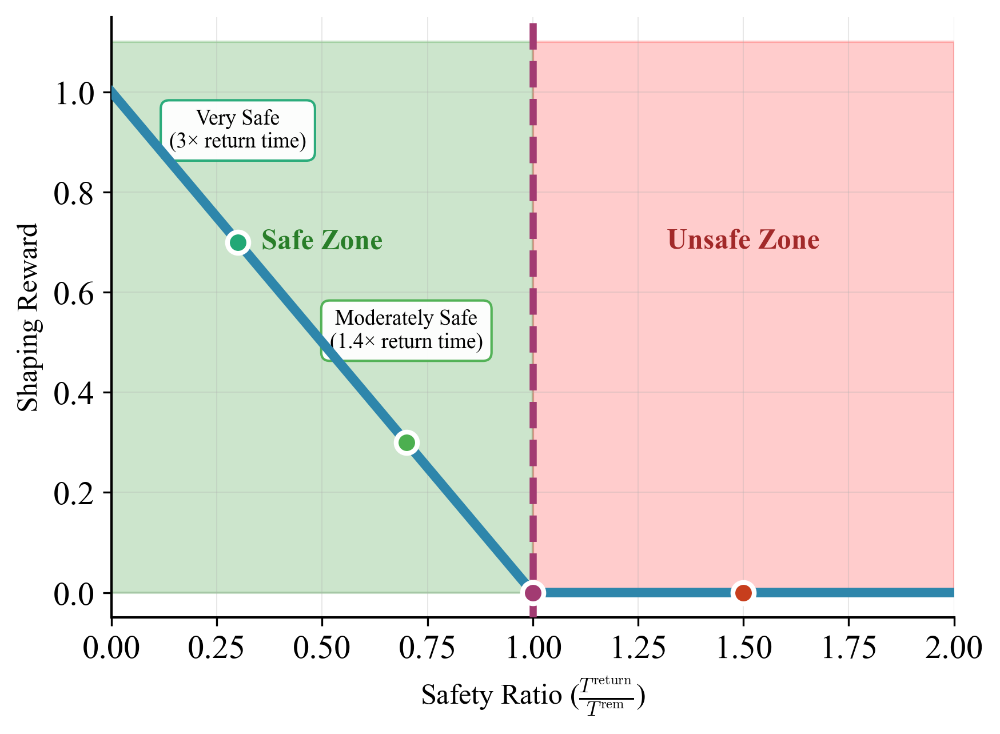

Reinforcement Learning for Time-Constrained Drone and Vehicle Routing


Simulation using Yellowstone coordinates. Map © OpenStreetMap contributors.
Problem: choose valuable stops without running out of time
For post-disaster drone inspection, the policy chooses which site to visit and how long to collect data under a limited mission budget and random weather. Each decision affects the time left for later tasks and the return to base.




RAM-DQN: screen actions and preserve a return buffer
I used DQN to score destination–dwell-time choices. Dynamic action masking screens revisits and choices that exceed the estimated travel, collection, and return-time budget. Reward shaping encourages the policy to preserve a return-time buffer.
Across the broader routing research, I compared four RL methods with OR-Tools and heuristic baselines. The figures here illustrate the original RAM-DQN formulation.
Later work: learned soft bias for time-window routing
A stop can be reachable now while making a later deadline impossible. I used a small neural network to adjust action scores from constraint features, while retaining masks for structurally invalid actions.
On 10,000 time-window routing instances, our combined soft-bias configuration had about 12% infeasible routes, versus 56% for our internally trained hard-mask baseline, under the same epoch budget.
The configurations also used different reward-penalty settings, so this comparison does not isolate the effect of soft bias. It is separate from the RAM-DQN figures above.
Technical detail: soft-bias definition and training reward
gθ is a small MLP; z is the base decoder score; α bounds the correction. For time windows, lj is the latest arrival time and d is travel time/distance in the environment’s normalized units. Prize pj is used for OP/OPTW and set to zero in TSPTW. The adjusted scores pass through the policy’s logit processing and masked softmax; structurally invalid actions have zero selection probability.
Interpretation: a negative bias lowers an action’s probability; a positive bias raises its relative score. The network learns this adjustment from constraint features. It is a finite preference adjustment, not a guarantee of feasibility.
Separate training penalty (TSPTW): R = −(tour length + β · total lateness). Here β weights violations in the training reward; b adjusts action scores during decoding.
Comparison setup: Attention Model/POMO, 24 epochs, three seeds, 10,000 TSPTW-50 medium instances. Hard: β = 5 without a ramp; soft: β = 100 with a ramp. This is an internal configuration comparison, not a comparison against the fully trained published PIP-D model. In separate OPTW tests, soft bias performed better at 20 locations, while hard masking performed better at 100.
Connection to vehicle routes and charging stops
An EV must decide where to go and how long to charge without compromising its next trip. This shares the same coupling between route choices, stop duration, and future resources. An EV extension would add SOC, charging curves, station availability, and departure-energy requirements.
Related work: coordinating production demand and microgrid dispatch.